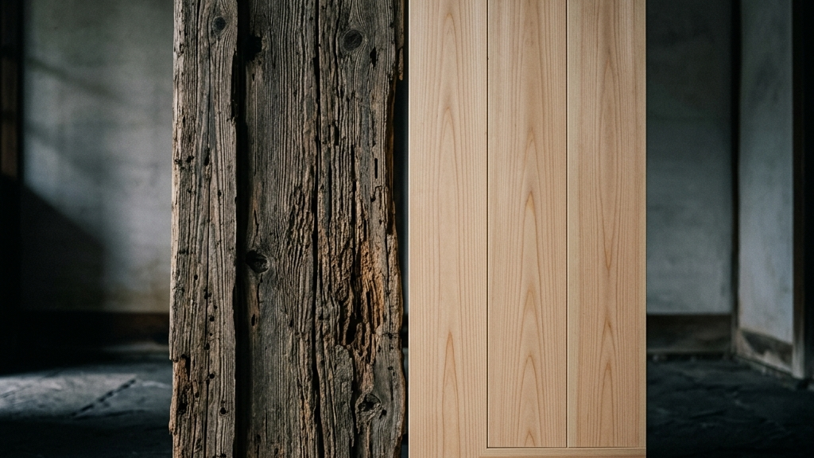

124年に一度の大改修と、たった3年で解体される仮殿。この両極端な時間軸が交差する太宰府天満宮の境内は、我々に一つの痛烈な問いを突きつけている。「効率の先にあるものは、本当に豊かさなのか」と。
ビジネスの最前線にいると、どうしても「いかに早く、いかに安く、いかに予測可能にプロジェクトを進めるか」というKPI至上主義に陥りがちだ。数値を管理し、進捗を可視化することで、上に立つ人間は安心感を得る。しかし、完璧にマニュアル化されたコンクリートのような組織は、想定外の強風（トラブル）に遭遇した途端、脆くも崩れ去る。余白がなく、マニュアル以外の対応ができないからだ。
一方で、檜皮葺の屋根や漆塗りのような伝統技法は、一見すると非効率の極みである。自然素材というノイズだらけの変数を相手にし、職人の暗黙知という数値化不可能な感覚に依存する。しかし、この「思い通りにいかない余白」と「圧倒的な物理的摩擦」を受け入れることこそが、実は最も強靭なエコシステムを生み出しているのだ。100年経てば必ず劣化し、破壊されることを前提とし、そのたびに職人たちが総出で解体し、己の血肉を持てる技術のすべてを注ぎ込んで再び組み上げる。この終わりのない「蘇生のサイクル」があるからこそ、技術は絶えることなく次世代へと継承され、建物は1000年の時を生きながらえることができる。
翻って、私たちの組織マネジメントはどうだろうか。効率化の名の下に、摩擦を極端に恐れていないだろうか。部下と衝突するリスクを避け、数値だけを見て「管理」した気になっていないだろうか。相手が傷つくリスクを背負ってでも、あえて厳しい刃を抜き、本気で向き合う。数値化できない泥臭い「思考体力」を鍛え上げるための時間を投資する。それは、短期的なKPIから見れば完全に「無駄」で「非効率」かもしれない。しかし、その強烈な摩擦の中でしか、人間は本当の意味で育たない。進捗が見えない恐怖を受け入れ、泥臭い摩擦を許容する。それこそが、上に立つ人間に求められる本当の覚悟なのだ。
124年前の職人が見上げ、現代の職人が蘇らせ、そして100年後の職人が再び解体するであろう太宰府天満宮の御本殿。そこには、効率という薄っぺらい概念を嘲笑うかのような、途方もないスケールの「狂気」と「執念」が静かに鎮座している。私たちが後世に残すべきものは、完成された完璧なシステムではない。それを壊し、再び立ち上げるだけの熱量を持った、人間の泥臭い生態系そのものなのである。
Reference:
太宰府天満宮本殿、124年ぶり大改修終了 「浮かぶ森」の仮殿は5月19日から解体（西日本新聞）
伝統を身に纏い、1,000年先の未来へ遺す。Kakeraが織り上げる西陣織アロハシャツの哲学と私たちの物語は、CONCEPT、Kakera Aloha、およびABOUTよりご覧いただけます。